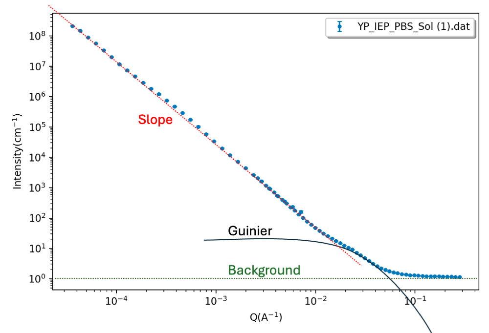

Home
Tutorial: Hierarchical Structures
Contributors: Andreas Haahr Larsen, Jeppe Breum Jacobsen

Sketch of nanoparticles aggregating into a branched network. This is an example of a hierarchical structure, as it has characteristic dimensions at different length scales, including the nanoparticle diameter, the overall size of the aggregate, and the dimensionality of the branched network. Figure reproduced from (Anitas, 2019).
Before you start
- Download and install the latest version of SasView (on MacOS: you need to install Xcode first)
- Knowledge of Guinier regions and radius of gyration, $R_g$ is necessary. See, e.g., the Primary data analysis tutorial.
- Knowledge of the general Porod limit, $I(q)\propto q^{-4}$ for high values of $q$ is useful.
- You should also be familiar with basic fitting in SasView. See the Spheres tutorial.
- You should be able to plot SAS data and adjust the scales (in a program of your own choice).
- You should be familiar with Shape2SAS. See the Spheres or the Shapes tutorial.
Learning outcomes
Learn to model SAXS or SANS data from hierarchical structures using shape-independent models. After the tutorial you should be able to:- Explain how to determine different structural levels from SAXS or SANS data.
- Fit data with a combination of exponential functions and Guinier regions.
- Understand what structural information about the sample that can be derived from the fits.
- Fit SAXS or SANS data using the unified fit model.
Introductory remarks
SAXS and SANS are unique in being able to probe both the outer structure and internal structure of gels, powders, colloids or particles in solution. Different structural levels can be probed at different angles, or $q$-values.
In some cases, an exact model may be generated to model the data, using a combination of form factors and structure factors, even for complex models. But if knowledge is limited or a detailed model is not necessary, one may use
Examples of hierarchical structures include dietary proteins (Tiong et al., 2025), and casein micelles from milk (Pedersen et al., 2022). The nanoparticles in the illustration in the top of the page is another example. They form a branched structure, that grows like a mass fractal.
Before starting, recall that distances in real space are inversely proportional to $q$-values in reciprocal space, i.e. $d \sim 2\pi/q$. This relation is especially important in this tutorial.
Part I: Slopes and dimension
In this exercise, you will learn how to think in terms of dimensions and structural hierarchies (rather than shapes). Go to Shape2SAS and simulate an elliptical cylinder with semiaxes a=10 Å, b=20 Å and length c=300 Å. Give the sample a relative polydispersity of 0.2 (or use this simulated data).You could fit the data using the form factor of a cylinder, but instead, we will consider it as a hierarchical structure. Plot the data on a log-log plot and consider each region of the data seperately, starting from the lowest values of $q$.
- Low-q region and change of slope: this region represents the largest dimension in data (here: cylinder length). The $q$-value at which the flat region ends relates approximately to the radius of gyration, $R_g\sim1/q$. A more exact value can be estimated by Guinier analysis. As the data are simulated, we know that $R_g\approx 105$ Å from Shape2SAS.
- Mid-q region: the next section of data has a slope of -1, which is characteristic for 1-dimensional structures such as rods or cylinders.
- Change of slope: the end of the region with the slope of -1 marks another dimension, namely the cylinder cross section. This corresponds approximately to a disc with the semiaxes a=10 Å, b=20 Å but a very short length c=5 Å, which has an $R_g$ of approximately 14 Å, again $R_g\sim1/q$. (simulate in Shape2SAS to see this).
- High-q region: the slope at high q values is approximately -4, which is the Porod limit for smooth surfaces. Rough surfaces give steeper slopes.
- Background: at the highest values of q, the data reaches a constant background level.

Optionally, the mid-q region with a slope of -4 can be fitted with a power law (category: Shape Independent).
Part II: Fit data using the unified model
The features found in Part I are general for SAXS and SANS data, leading to the idea of a unified fit model (Beaucage, 1995). Use the unified model (Category: Shape Independent) with 2 structural levels to fit the simulated data. The model has many parameters, so consider using a stepwise approach as outlined below.For a system with $N$ structural levels, the unified model fits the following expression to the data:
$$I(q) = \text{background} + \sum_{i=1}^N \left[ G_i \exp{\left(-\dfrac{q^2 R_{g,i}^2}{3}\right)} + B_i \exp{\left(-\dfrac{q^2 R_{g,i+1}^2}{3}\right)} \left( \dfrac{1}{q^*_i} \right)^{P_i} \right],$$ where $$q^*_i = q \left[ \text{erf} \left( \dfrac{qR_{g,i}}{\sqrt{6}} \right) \right]^{-3}.$$ The erf-function is the error function. The $R_g$s are the radii of gyration for the different structural levels, and the Gs are the scaling factors for the Guinier regions. The $P_i$ are the power law exponents (slopes on the log-log plot) and are denoted "power1" and "power2" in SasView. The Bs set the scaling for the power law regions. The $R_g$s should always be positive. The scaling factors G and B should also be positive (or 0), since we are never subtracting intensities. With this definition for $I(q)$, we should also make sure that the $P_i$s are positive for a negative slope on the log-log plot.
- Fitting with unified fit model:
- Structural Levels: Determine the number of structural levels.
- Slopes: Estimate the slopes (power1, power2,...), e.g by fitting a power law to each region.
- Radii of gyration: Radii of gyration can be determined (e.g. as done in Part I).
- Background: Provide a good estimate of the constant background level.
- Scaling parameters for Guinier (G): Set all scalings (G1,G2,...) and (B1,B2,...) to zero, except G for the highest level (largest $q$). Adjust G to fit the Guinier region. continue with next level(s).
- Scaling parameters for slopes (B): Adjust Bs one at a time until the model is close to the data.
- Fit(!): Fit the parameters. Remember not to fit the overall scale, as it is correlated to the Gs and Bs.
- Note: If you do not see a flat region followed by a change in slope, the largest dimension is not resolved. You may still use the unified model, but it is not possible to determine $R_g$ for the first structural level (largest dimension), although it might still be possible to determine its dimensionality from the slope.
For more complex samples, the $\chi^2$ may be relatively high, as the model is approximate and only describes overall structural features (no shape, only size and dimensionality).
Part III: Mixture
In the following exercise, we will look at a combined USANS/SANS dataset (USANS is Ultra-small-angle neutron scattering) of Pea protein (plant-based protein with potential to replace animal protein). The protein is suspended in a solution. Determine structural characteristics and fit the data. You may use the following step-by-step guide:- Step 1: visual inspection From visual inspection (remember: log-log plot), determine any slopes or Guinier regions. Identify any Guinier regions (to estimate $R_g$) or slopes.

There seems to be a slope in the data at low $q$, followed by a Guinier region and a constant background level.
- Step 2: estimate values Estimate slope(s), $R_g$ value(s), and the background level. In this step, you may do some simple fitting of specific q-ranges, as in Part I.
- Step 3: choose model The initial slope is high, meaning that it may be a mixture of different structures, with the high slope representing large aggregates, and the Guinier region representing smaller particles in solution. A mix of structures (as opposed to one hierarchical structure) can be fitted with a sum - one model for each structure.
Here, you can combine a power law (for the low-q slope) and guinier_porod. In SasView: Fitting > Add/Multiply models. Select the two models to combine, give the model a name and a description (could be the same as the name, or a space, if you are lazy). - Step 4: guess parameters Insert values from step 2 and adjust (compute, no fitting yet) until you have reasonable consistency with data.
Set the parameter $s$ to zero, as the pea proteins are expected to be globular. - Step 5: fit(!) Refine the parameters. You may fix some parameters (besides from s and the scale, or restrain parameters to a reasonable interval using min and max columns).
You may get something similar to this. The "ripples" at $q\sim0.004$ come from SANS resolution effects at overlapping settings that are merged into a single datafile.
Challenges
- Challenge 1: You have measured a sample of nanodiamond powder with SAXS (note that the data is in units of $\text{nm}^{-1}$, and that SasView assumes $\text{Å}^{-1}$). Fit the data, and describe the structural levels in terms of size and dimensionality (you may ignore the Bragg peak at high $q$, or you can include it in your fit, e.g. by adding a Gaussian peak).
- Challenge 2: The pea protein from Part III was also measured in the gel phase (as opposed to in solution). Describe the structural differences between the solution and gel states. You may also try to fit the data. Download the SAXS data of pea protein in the gel state here. Optionally, you can compare your findings to Tiong et al., 2025.
Perspectives
- The unified fit model and other shape-independent models are also available in the Irena software for fitting SAXS/SANS data. You may use this software for the tutorial (video guide by Jan Ilavsky for using the unified fit in Irena).
Help and feedback
Help us improve the tutorials by- Reporting issues and bugs via our GitHub page. This could be typos, dead links etc., but also insufficient information or unclear instructions.
- Suggesting new tutorials/additions/improvements in the SAStutorials forum.
- Posting or answering questions in the SAStutorials forum.